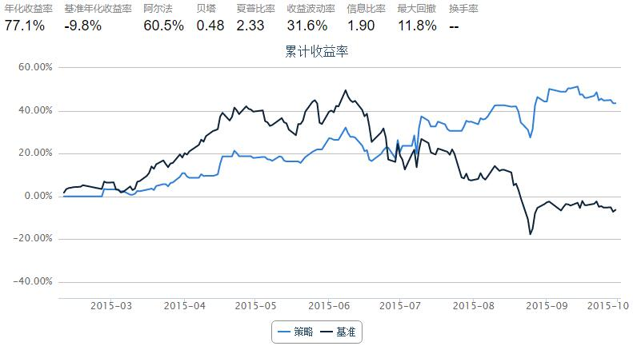
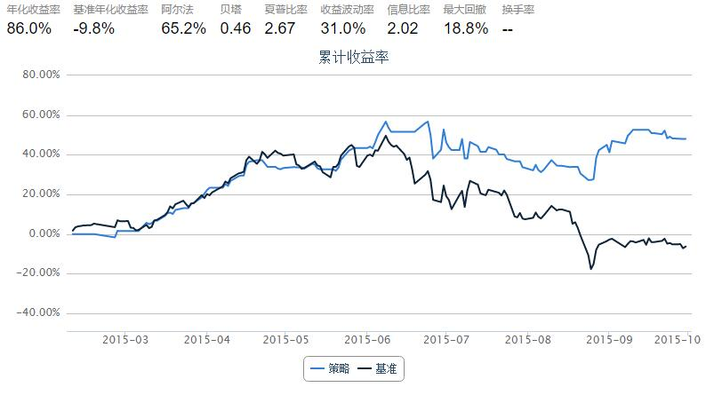
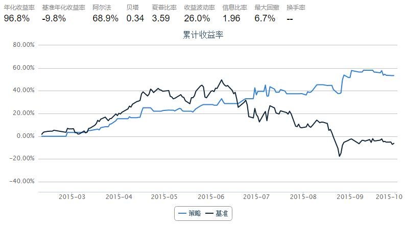

【50ETF期权】 期权择时指数 1.0
本文中，我们使用期权的日行情数据，计算期权情绪指标，并用以指导实战择时
初步讨论只包括两个指标
- 成交量(成交额) PCR：看跌看涨期权的成交量(成交额)比率
- PCIVD：Put Call Implied Volatility Difference 看跌看涨期权隐含波动率差
from CAL.PyCAL import *
import pandas as pd
import numpy as np
import matplotlib.pyplot as plt
from matplotlib import rc
rc('mathtext', default='regular')
import seaborn as sns
sns.set_style('white')
from matplotlib import dates
from pandas import concat
from scipy import interpolate
import math
1. 看跌看涨成交量（成交额）比率 PCR
- 计算每日看跌看涨成交量或成交额的比率，即PCR
- 我们考虑PCR每日变化量与现货50ETF隔日收益率的关系
- 每日PCR变化量PCRD为：当日PCR减去前一日PCR得到的值，即对PCR做差分
def histVolumeOpt50ETF(beginDate, endDate):
## 计算历史一段时间内的50ETF期权持仓量交易量数据
optionVarSecID = u"510050.XSHG"
cal = Calendar('China.SSE')
dates = cal.bizDatesList(beginDate, endDate)
dates = map(Date.toDateTime, dates)
columns = ['callVol', 'putVol', 'callValue',
'putValue', 'callOpenInt', 'putOpenInt',
'nearCallVol', 'nearPutVol', 'nearCallValue',
'nearPutValue', 'nearCallOpenInt', 'nearPutOpenInt',
'netVol', 'netValue', 'netOpenInt',
'volPCR', 'valuePCR', 'openIntPCR',
'nearVolPCR', 'nearValuePCR', 'nearOpenIntPCR']
hist_opt = pd.DataFrame(0.0, index=dates, columns=columns)
hist_opt.index.name = 'date'
# 每一个交易日数据单独计算
for date in hist_opt.index:
date_str = Date.fromDateTime(date).toISO().replace('-', '')
try:
opt_data = DataAPI.MktOptdGet(secID=u"", tradeDate=date_str, field=u"", pandas="1")
except:
hist_opt = hist_opt.drop(date)
continue
opt_type = []
exp_date = []
for ticker in opt_data.secID.values:
opt_type.append(ticker[6])
exp_date.append(ticker[7:11])
opt_data['optType'] = opt_type
opt_data['expDate'] = exp_date
near_exp = np.sort(opt_data.expDate.unique())[0]
data = opt_data.groupby('optType')
# 计算所有上市期权：看涨看跌交易量、看涨看跌交易额、看涨看跌持仓量
hist_opt['callVol'][date] = data.turnoverVol.sum()['C']
hist_opt['putVol'][date] = data.turnoverVol.sum()['P']
hist_opt['callValue'][date] = data.turnoverValue.sum()['C']
hist_opt['putValue'][date] = data.turnoverValue.sum()['P']
hist_opt['callOpenInt'][date] = data.openInt.sum()['C']
hist_opt['putOpenInt'][date] = data.openInt.sum()['P']
near_data = opt_data[opt_data.expDate == near_exp]
near_data = near_data.groupby('optType')
# 计算近月期权(主力合约)： 看涨看跌交易量、看涨看跌交易额、看涨看跌持仓量
hist_opt['nearCallVol'][date] = near_data.turnoverVol.sum()['C']
hist_opt['nearPutVol'][date] = near_data.turnoverVol.sum()['P']
hist_opt['nearCallValue'][date] = near_data.turnoverValue.sum()['C']
hist_opt['nearPutValue'][date] = near_data.turnoverValue.sum()['P']
hist_opt['nearCallOpenInt'][date] = near_data.openInt.sum()['C']
hist_opt['nearPutOpenInt'][date] = near_data.openInt.sum()['P']
# 计算所有上市期权： 总交易量、总交易额、总持仓量
hist_opt['netVol'][date] = hist_opt['callVol'][date] + hist_opt['putVol'][date]
hist_opt['netValue'][date] = hist_opt['callValue'][date] + hist_opt['putValue'][date]
hist_opt['netOpenInt'][date] = hist_opt['callOpenInt'][date] + hist_opt['putOpenInt'][date]
# 计算期权看跌看涨期权交易量(持仓量)的比率：
# 交易量看跌看涨比率，交易额看跌看涨比率, 持仓量看跌看涨比率
# 近月期权交易量看跌看涨比率，近月期权交易额看跌看涨比率, 近月期权持仓量看跌看涨比率
# PCR = Put Call Ratio
hist_opt['volPCR'][date] = round(hist_opt['putVol'][date]*1.0/hist_opt['callVol'][date], 4)
hist_opt['valuePCR'][date] = round(hist_opt['putValue'][date]*1.0/hist_opt['callValue'][date], 4)
hist_opt['openIntPCR'][date] = round(hist_opt['putOpenInt'][date]*1.0/hist_opt['callOpenInt'][date], 4)
hist_opt['nearVolPCR'][date] = round(hist_opt['nearPutVol'][date]*1.0/hist_opt['nearCallVol'][date], 4)
hist_opt['nearValuePCR'][date] = round(hist_opt['nearPutValue'][date]*1.0/hist_opt['nearCallValue'][date], 4)
hist_opt['nearOpenIntPCR'][date] = round(hist_opt['nearPutOpenInt'][date]*1.0/hist_opt['nearCallOpenInt'][date], 4)
return hist_opt
def histPrice50ETF(beginDate, endDate):
# 华夏上证50ETF收盘价数据
secID = '510050.XSHG'
begin = Date.fromDateTime(beginDate).toISO().replace('-', '')
end = Date.fromDateTime(endDate).toISO().replace('-', '')
fields = ['tradeDate', 'closePrice', 'preClosePrice']
etf = DataAPI.MktFunddGet(secID, beginDate=begin, endDate=end, field=fields)
etf['tradeDate'] = pd.to_datetime(etf['tradeDate'])
etf['dailyReturn'] = etf['closePrice'] / etf['preClosePrice'] - 1.0
etf = etf.set_index('tradeDate')
return etf
def histPCR50ETF(beginDate, endDate):
# PCRD: Put Call Ratio Diff
# 计算每日PCR变化量：当日PCR减去前一日PCR得到的值，即对PCR做差分
# 专注于某一项PCR，例如：成交额PCR --- valuePCR
pcr_names = ['volPCR', 'valuePCR', 'openIntPCR',
'nearVolPCR', 'nearValuePCR', 'nearOpenIntPCR']
pcr_diff_names = [pcr + 'Diff' for pcr in pcr_names]
pcr = histVolumeOpt50ETF(beginDate, endDate)
for pcr_name in pcr_names:
pcr[pcr_name + 'Diff'] = pcr[pcr_name].diff()
return pcr[pcr_names + pcr_diff_names]
计算PCR
- 期权自15年2月9号上市
- 此处计算得到的数据可以用在后面几条策略中
## PCRD计算示例
start = datetime(2015,2, 9) # 回测起始时间
end = datetime(2015, 10, 13) # 回测结束时间
hist_pcrd = histPCR50ETF(start, end) # 计算PCRD
hist_pcrd.tail()
| volPCR | valuePCR | openIntPCR | nearVolPCR | nearValuePCR | nearOpenIntPCR | volPCRDiff | valuePCRDiff | openIntPCRDiff | nearVolPCRDiff | nearValuePCRDiff | nearOpenIntPCRDiff | |
|---|---|---|---|---|---|---|---|---|---|---|---|---|
| date | ||||||||||||
| 2015-09-29 | 1.0863 | 1.5860 | 0.6680 | 1.2372 | 1.6552 | 0.7632 | 0.0255 | 0.4779 | -0.0058 | 0.0801 | 0.6352 | -0.0193 |
| 2015-09-30 | 0.9664 | 1.1366 | 0.6709 | 1.1153 | 1.1460 | 0.7579 | -0.1199 | -0.4494 | 0.0029 | -0.1219 | -0.5092 | -0.0053 |
| 2015-10-08 | 0.8997 | 0.5940 | 0.6726 | 0.9244 | 0.4646 | 0.7480 | -0.0667 | -0.5426 | 0.0017 | -0.1909 | -0.6814 | -0.0099 |
| 2015-10-09 | 1.0979 | 0.7708 | 0.7068 | 1.1542 | 0.6672 | 0.8121 | 0.1982 | 0.1768 | 0.0342 | 0.2298 | 0.2026 | 0.0641 |
| 2015-10-12 | 0.6494 | 0.2432 | 0.7713 | 0.6604 | 0.2002 | 1.0197 | -0.4485 | -0.5276 | 0.0645 | -0.4938 | -0.4670 | 0.2076 |
1.1 使用基于成交量 PCR 日变化量的择时策略
策略思路：考虑成交量 PCR 日变化量 PCRD(volume)
- 前一日PCRD(volume)小于0，则今天全仓50ETF
- 否则，清仓观望
- 简单来说，就是PCR上升，空仓；PCR下降，买入
start = datetime(2015, 2, 9) # 回测起始时间
end = datetime(2015, 10, 7) # 回测结束时间
benchmark = '510050.XSHG' # 策略参考标准
universe = ['510050.XSHG'] # 股票池
capital_base = 100000 # 起始资金
commission = Commission(0.0,0.0)
refresh_rate = 1
# hist_pcrd = histPCR50ETF(start, end) # 计算PCRD
def initialize(account): # 初始化虚拟账户状态
account.fund = universe[0]
def handle_data(account): # 每个交易日的买入卖出指令
fund = account.fund
# 获取回测当日的前一天日期
dt = Date.fromDateTime(account.current_date)
cal = Calendar('China.IB')
last_day = cal.advanceDate(dt,'-1B',BizDayConvention.Preceding) #计算出倒数第一个交易日
last_day_str = last_day.strftime("%Y-%m-%d")
# 计算买入卖出信号
try:
# 拿取PCRD数据
pcrd_last_vol = hist_pcrd.volPCRDiff.loc[last_day_str] # PCRD(volumn)
long_flag = True if pcrd_last_vol < 0 else False # 调仓条件
except:
long_flag = False
if long_flag:
# 买入时，全仓杀入
try:
approximationAmount = int(account.cash / account.referencePrice[fund] / 100.0) * 100
order(fund, approximationAmount)
except:
return
else:
# 卖出时，全仓清空
order_to(fund, 0)

1.2 使用基于成交额 PCR 日变化量的择时策略
策略思路：考虑成交额 PCR 日变化量 PCRD(value)
- 前一日PCRD(value)小于0，则今天全仓50ETF
- 否则，清仓观望
- 简单来说，就是PCR上升，空仓；PCR下降，买入
start = datetime(2015, 2, 9) # 回测起始时间
end = datetime(2015, 10, 7) # 回测结束时间
benchmark = '510050.XSHG' # 策略参考标准
universe = ['510050.XSHG'] # 股票池
capital_base = 100000 # 起始资金
commission = Commission(0.0,0.0)
refresh_rate = 1
# hist_pcrd = histPCR50ETF(start, end) # 计算PCRD
def initialize(account): # 初始化虚拟账户状态
account.fund = universe[0]
def handle_data(account): # 每个交易日的买入卖出指令
fund = account.fund
# 获取回测当日的前一天日期
dt = Date.fromDateTime(account.current_date)
cal = Calendar('China.IB')
last_day = cal.advanceDate(dt,'-1B',BizDayConvention.Preceding) #计算出倒数第一个交易日
last_day_str = last_day.strftime("%Y-%m-%d")
# 计算买入卖出信号
try:
# 拿取PCRD数据
pcrd_last_value = hist_pcrd.valuePCRDiff.loc[last_day_str] # PCRD(value)
long_flag = True if pcrd_last_value < 0 else False # 调仓条件
except:
long_flag = False
if long_flag:
# 买入时，全仓杀入
try:
approximationAmount = int(account.cash / account.referencePrice[fund] / 100.0) * 100
order(fund, approximationAmount)
except:
return
else:
# 卖出时，全仓清空
order_to(fund, 0)

1.3 结合使用成交量、成交额 PCR 日变化量的择时策略
策略思路：考虑成交量PCRD(volume) 和成交额PCRD(value)
- 前一日PCRD(volume)和PCRD(value)同时小于0，则今天全仓50ETF
- 否则，清仓观望
start = datetime(2015, 2, 9) # 回测起始时间
end = datetime(2015, 10, 7) # 回测结束时间
benchmark = '510050.XSHG' # 策略参考标准
universe = ['510050.XSHG'] # 股票池
capital_base = 100000 # 起始资金
commission = Commission(0.0,0.0)
refresh_rate = 1
hist_pcrd = histPCR50ETF(start, end) # 计算PCRD
def initialize(account): # 初始化虚拟账户状态
account.fund = universe[0]
def handle_data(account): # 每个交易日的买入卖出指令
fund = account.fund
# 获取回测当日的前一天日期
dt = Date.fromDateTime(account.current_date)
cal = Calendar('China.IB')
last_day = cal.advanceDate(dt,'-1B',BizDayConvention.Preceding) #计算出倒数第一个交易日
last_day_str = last_day.strftime("%Y-%m-%d")
# 计算买入卖出信号
try:
# 拿取PCRD数据
pcrd_last_value = hist_pcrd.valuePCRDiff.loc[last_day_str] # PCRD(value)
pcrd_last_vol = hist_pcrd.volPCRDiff.loc[last_day_str] # PCRD(volumn)
long_flag = True if pcrd_last_value < 0.0 and pcrd_last_vol < 0.0 else False # 调仓条件
except:
long_flag = False
if long_flag:
# 买入时，全仓杀入
try:
approximationAmount = int(account.cash / account.referencePrice[fund] / 100.0) * 100
order(fund, approximationAmount)
except:
return
else:
# 卖出时，全仓清空
order_to(fund, 0)

2. 看跌看涨隐含波动率价差 PCIVD
- 相同到期日、行权价的看跌看涨期权，其隐含波动率会有差异
- 由于套保需要，一般看跌期权隐含波动率高于看涨期权
- 看跌、看涨期权隐含波动率之差 PCIVD 的每日变化可以用来指导实际操作
- 在计算中，我们使用平值附近的期权计算 PCIVD
## 银行间质押式回购利率
def histDayInterestRateInterbankRepo(date):
cal = Calendar('China.SSE')
period = Period('-10B')
begin = cal.advanceDate(date, period)
begin_str = begin.toISO().replace('-', '')
date_str = date.toISO().replace('-', '')
# 以下的indicID分别对应的银行间质押式回购利率周期为：
# 1D, 7D, 14D, 21D, 1M, 3M, 4M, 6M, 9M, 1Y
indicID = [u"M120000067", u"M120000068", u"M120000069", u"M120000070", u"M120000071",
u"M120000072", u"M120000073", u"M120000074", u"M120000075", u"M120000076"]
period = np.asarray([1.0, 7.0, 14.0, 21.0, 30.0, 90.0, 120.0, 180.0, 270.0, 360.0]) / 360.0
period_matrix = pd.DataFrame(index=indicID, data=period, columns=['period'])
field = u"indicID,indicName,publishTime,periodDate,dataValue,unit"
interbank_repo = DataAPI.ChinaDataInterestRateInterbankRepoGet(indicID=indicID,beginDate=begin_str,endDate=date_str,field=field,pandas="1")
interbank_repo = interbank_repo.groupby('indicID').first()
interbank_repo = concat([interbank_repo, period_matrix], axis=1, join='inner').sort_index()
return interbank_repo
## 银行间同业拆借利率
def histDaySHIBOR(date):
cal = Calendar('China.SSE')
period = Period('-10B')
begin = cal.advanceDate(date, period)
begin_str = begin.toISO().replace('-', '')
date_str = date.toISO().replace('-', '')
# 以下的indicID分别对应的SHIBOR周期为：
# 1D, 7D, 14D, 1M, 3M, 6M, 9M, 1Y
indicID = [u"M120000057", u"M120000058", u"M120000059", u"M120000060",
u"M120000061", u"M120000062", u"M120000063", u"M120000064"]
period = np.asarray([1.0, 7.0, 14.0, 30.0, 90.0, 180.0, 270.0, 360.0]) / 360.0
period_matrix = pd.DataFrame(index=indicID, data=period, columns=['period'])
field = u"indicID,indicName,publishTime,periodDate,dataValue,unit"
interest_shibor = DataAPI.ChinaDataInterestRateSHIBORGet(indicID=indicID,beginDate=begin_str,endDate=date_str,field=field,pandas="1")
interest_shibor = interest_shibor.groupby('indicID').first()
interest_shibor = concat([interest_shibor, period_matrix], axis=1, join='inner').sort_index()
return interest_shibor
## 插值得到给定的周期的无风险利率
def periodsSplineRiskFreeInterestRate(date, periods):
# 此处使用SHIBOR来插值
init_shibor = histDaySHIBOR(date)
shibor = {}
min_period = min(init_shibor.period.values)
min_period = 25.0/360.0
max_period = max(init_shibor.period.values)
for p in periods.keys():
tmp = periods[p]
if periods[p] > max_period:
tmp = max_period * 0.99999
elif periods[p] < min_period:
tmp = min_period * 1.00001
sh = interpolate.spline(init_shibor.period.values, init_shibor.dataValue.values, [tmp], order=3)
shibor[p] = sh[0]/100.0
return shibor
## 使用DataAPI.OptGet, DataAPI.MktOptdGet拿到计算所需数据
def histDayDataOpt50ETF(date):
date_str = date.toISO().replace('-', '')
#使用DataAPI.OptGet，拿到已退市和上市的所有期权的基本信息
info_fields = [u'optID', u'varSecID', u'varShortName', u'varTicker', u'varExchangeCD', u'varType',
u'contractType', u'strikePrice', u'contMultNum', u'contractStatus', u'listDate',
u'expYear', u'expMonth', u'expDate', u'lastTradeDate', u'exerDate', u'deliDate',
u'delistDate']
opt_info = DataAPI.OptGet(optID='', contractStatus=[u"DE",u"L"], field=info_fields, pandas="1")
#使用DataAPI.MktOptdGet，拿到历史上某一天的期权成交信息
mkt_fields = [u'ticker', u'optID', u'secShortName', u'exchangeCD', u'tradeDate', u'preSettlePrice',
u'preClosePrice', u'openPrice', u'highestPrice', u'lowestPrice', u'closePrice',
u'settlPrice', u'turnoverVol', u'turnoverValue', u'openInt']
opt_mkt = DataAPI.MktOptdGet(tradeDate=date_str, field=mkt_fields, pandas = "1")
opt_info = opt_info.set_index(u"optID")
opt_mkt = opt_mkt.set_index(u"optID")
opt = concat([opt_info, opt_mkt], axis=1, join='inner').sort_index()
return opt
# 旧版forward计算稍有差别
def histDayMktForwardPriceOpt50ETF(opt, risk_free):
exp_dates_str = np.sort(opt.expDate.unique())
trade_date = Date.parseISO(opt.tradeDate.values[0])
forward = {}
for date_str in exp_dates_str:
opt_date = opt[opt.expDate == date_str]
opt_call_date = opt_date[opt_date.contractType == 'CO']
opt_put_date = opt_date[opt_date.contractType == 'PO']
opt_call_date = opt_call_date[[u'strikePrice', u'price']].set_index('strikePrice').sort_index()
opt_put_date = opt_put_date[[u'strikePrice', u'price']].set_index('strikePrice').sort_index()
opt_call_date.columns = [u'callPrice']
opt_put_date.columns = [u'putPrice']
opt_date = concat([opt_call_date, opt_put_date], axis=1, join='inner').sort_index()
opt_date['diffCallPut'] = opt_date.callPrice - opt_date.putPrice
strike = abs(opt_date['diffCallPut']).idxmin()
priceDiff = opt_date['diffCallPut'][strike]
date = Date.parseISO(date_str)
ttm = abs(float(date - trade_date + 1.0)/365.0)
rf = risk_free[date]
fw = strike + np.exp(ttm*rf) * priceDiff
forward[date] = fw
return forward
## 分析历史某一日的期权收盘价信息，得到隐含波动率微笑和期权风险指标
def histDayAnalysisOpt50ETF(date):
opt_var_sec = u"510050.XSHG" # 期权标的
opt = histDayDataOpt50ETF(date)
#使用DataAPI.MktFunddGet拿到期权标的的日行情
date_str = date.toISO().replace('-', '')
opt_var_mkt = DataAPI.MktFunddGet(secID=opt_var_sec,tradeDate=date_str,beginDate=u"",endDate=u"",field=u"",pandas="1")
#opt_var_mkt = DataAPI.MktFunddAdjGet(secID=opt_var_sec,beginDate=date_str,endDate=date_str,field=u"",pandas="1")
# 计算shibor
exp_dates_str = opt.expDate.unique()
periods = {}
for date_str in exp_dates_str:
exp_date = Date.parseISO(date_str)
periods[exp_date] = (exp_date - date)/360.0
shibor = periodsSplineRiskFreeInterestRate(date, periods)
# 计算forward price
opt_tmp = opt[[u'contractType', u'tradeDate', u'strikePrice', u'expDate', u'settlPrice']]
opt_tmp.columns = [[u'contractType', u'tradeDate', u'strikePrice', u'expDate', u'price']]
forward_price = histDayMktForwardPriceOpt50ETF(opt_tmp, shibor)
settle = opt.settlPrice.values # 期权 settle price
close = opt.closePrice.values # 期权 close price
strike = opt.strikePrice.values # 期权 strike price
option_type = opt.contractType.values # 期权类型
exp_date_str = opt.expDate.values # 期权行权日期
eval_date_str = opt.tradeDate.values # 期权交易日期
mat_dates = []
eval_dates = []
spot = []
for epd, evd in zip(exp_date_str, eval_date_str):
mat_dates.append(Date.parseISO(epd))
eval_dates.append(Date.parseISO(evd))
spot.append(opt_var_mkt.closePrice[0])
time_to_maturity = [float(mat - eva + 1.0)/365.0 for (mat, eva) in zip(mat_dates, eval_dates)]
risk_free = [] # 无风险利率
forward = [] # 市场远期
for s, mat, time in zip(spot, mat_dates, time_to_maturity):
#rf = math.log(forward_price[mat] / s) / time
rf = shibor[mat]
risk_free.append(rf)
forward.append(forward_price[mat])
opt_types = [] # 期权类型
for t in option_type:
if t == 'CO':
opt_types.append(1)
else:
opt_types.append(-1)
# 使用通联CAL包中 BSMImpliedVolatity 计算隐含波动率
calculated_vol = BSMImpliedVolatity(opt_types, strike, spot, risk_free, 0.0, time_to_maturity, settle)
calculated_vol = calculated_vol.fillna(0.0)
# 使用通联CAL包中 BSMPrice 计算期权风险指标
greeks = BSMPrice(opt_types, strike, spot, risk_free, 0.0, calculated_vol.vol.values, time_to_maturity)
# vega、rho、theta 的计量单位参照上交所的数据，以求统一对比
greeks.vega = greeks.vega #/ 100.0
greeks.rho = greeks.rho #/ 100.0
greeks.theta = greeks.theta #* 365.0 / 252.0 #/ 365.0
opt['strike'] = strike
opt['forward'] = np.around(forward, decimals=3)
opt['optType'] = option_type
opt['expDate'] = exp_date_str
opt['spotPrice'] = spot
opt['riskFree'] = risk_free
opt['timeToMaturity'] = np.around(time_to_maturity, decimals=4)
opt['settle'] = np.around(greeks.price.values.astype(np.double), decimals=4)
opt['iv'] = np.around(calculated_vol.vol.values.astype(np.double), decimals=4)
opt['delta'] = np.around(greeks.delta.values.astype(np.double), decimals=4)
opt['vega'] = np.around(greeks.vega.values.astype(np.double), decimals=4)
opt['gamma'] = np.around(greeks.gamma.values.astype(np.double), decimals=4)
opt['theta'] = np.around(greeks.theta.values.astype(np.double), decimals=4)
opt['rho'] = np.around(greeks.rho.values.astype(np.double), decimals=4)
fields = [u'ticker', u'contractType', u'strikePrice', 'forward', u'expDate', u'tradeDate',
u'closePrice', u'settlPrice', 'spotPrice', u'iv',
u'delta', u'vega', u'gamma', u'theta', u'rho']
opt = opt[fields].reset_index().set_index('ticker').sort_index()
#opt['iv'] = opt.iv.replace(to_replace=0.0, value=np.nan)
return opt
# 每日期权分析数据整理
def histDayGreeksIVOpt50ETF(date):
# Uqer 计算期权的风险数据
opt = histDayAnalysisOpt50ETF(date)
# 整理数据部分
opt.index = [index[-10:] for index in opt.index]
opt = opt[['contractType','strikePrice','spotPrice','forward','expDate','closePrice','iv','delta','theta','gamma','vega','rho']]
opt.columns = [['contractType','strike','spot','forward','expDate','close','iv','delta','theta','gamma','vega','rho']]
opt_call = opt[opt.contractType=='CO']
opt_put = opt[opt.contractType=='PO']
opt_call.columns = pd.MultiIndex.from_tuples([('Call', c) for c in opt_call.columns])
opt_call[('Call-Put', 'strike')] = opt_call[('Call', 'strike')]
opt_call[('Call-Put', 'spot')] = opt_call[('Call', 'spot')]
opt_call[('Call-Put', 'forward')] = opt_call[('Call', 'forward')]
opt_put.columns = pd.MultiIndex.from_tuples([('Put', c) for c in opt_put.columns])
opt = concat([opt_call, opt_put], axis=1, join='inner').sort_index()
opt = opt.set_index(('Call','expDate')).sort_index()
opt = opt.drop([('Call','contractType'), ('Call','strike'), ('Call','forward'), ('Call','spot')], axis=1)
opt = opt.drop([('Put','expDate'), ('Put','contractType'), ('Put','strike'), ('Put','forward'), ('Put','spot')], axis=1)
opt.index.name = 'expDate'
## 以上得到完整的历史某日数据，格式简洁明了
return opt
# 做图展示某一天的隐含波动率微笑
def histDayPlotSmileVolatilityOpt50ETF(date):
cal = Calendar('China.SSE')
if not cal.isBizDay(date):
print date, ' is not a trading day!'
return
# Uqer 计算期权的风险数据
opt = histDayGreeksIVOpt50ETF(date)
spot = opt[('Call-Put', 'spot')].values[0]
# 下面展示波动率微笑
exp_dates = np.sort(opt.index.unique())
## ----------------------------------------------
fig = plt.figure(figsize=(10,8))
fig.set_tight_layout(True)
for i in range(exp_dates.shape[0]):
date = exp_dates[i]
ax = fig.add_subplot(2,2,i+1)
opt_date = opt[opt.index==date].set_index(('Call-Put', 'strike'))
opt_date.index.name = 'strike'
ax.plot(opt_date.index, opt_date[('Call', 'iv')], '-o')
ax.plot(opt_date.index, opt_date[('Put', 'iv')], '-s')
(y_min, y_max) = ax.get_ylim()
ax.plot([spot, spot], [y_min, y_max], '--')
ax.set_ylim(y_min, y_max)
ax.legend(['call', 'put'], loc=0)
ax.grid()
ax.set_xlabel(u"strike")
ax.set_ylabel(r"Implied Volatility")
plt.title(exp_dates[i])
```py